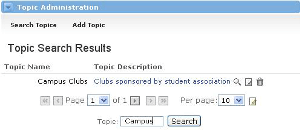

View, Edit and Delete a Topic : Modifying Topics
View Topic Details
To view the details of a Topic, simply follow these steps:
- In the Topic Administration window, first click the Search Topics.
- Enter the criteria for the Topic(s) you wish to view and click search.
- To view the details of a Topic, click on the topic name.
- You will now see the Topic Name, Parent Group and the Description.

Edit a Topic
To Edit a Topic follow the steps above, then do this:
- Click the Edit icon next to the name of the Topic.
- You can now edit the Topic Name and Topic Description as you desire.
- Once your changes have been made, click the Submit button.

Delete a Topic
- Locate the Topic you want to delete and click the Delete icon next to it.
- You will now see a confirmation screen. If you're sure you want to delete this Topic, select the Yes radio button and click Submit.
- You can do a quick search to confirm that the Topic has been deleted.